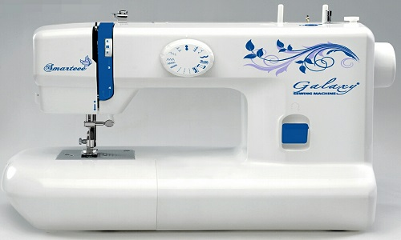

Our Products

Galaxy Automatic Machine
- Oscillating hook,vertical spool pin,LED Light
- Verical front-load bobbing system,One touch snap-on foot
- 4-step button hole,thread cutter,Strong Torque for heavy fabric
- Built in tension with accurate setting
- with darning plate for embroidery
- Automatic Robbin Winder, Reverse lever
- Fold away carrying handle,Free arm light weight

Galaxy 130k Model
- Designed for embroidery, picot, darning, shade work and straight stiching
- Single and twin needle compatible
- Sewing Speed Up to 2000 SPM
- Gear type machine
- Two drive system options: Manual using foot treadle on stand/ table and Motorized

Galaxy BagCloser Model
- Single Needle, Single Thread DA-R portable bag closing machines are suitable for closing all kinds of small to large bags used for chemicals, fertilizers, animal-feed, food grains, food products etc. All kinds of multi-wall paper, kraft-paper, burlap, cotton, PP/PE, Hessian, woven polyester, jute bags etc

Galaxy 31k leather stitch Model
- Link motion heavy duty machine
- Parts such as feed fork and feed dog holder are tempered
- Sewing speed 1000 SPM
- Two drive system: Manual using foot treadle on stand/ table and Motorized

Galaxy Deluxe Model
- Square arm
- Lever type stitch regulator
- Auto tripping bobbin winder
- Also available in Black colour Available with stand and table

Galaxy Tailor Model
- Lever type stitch regulator
- Auto tripping bobbin winder
- Available with stand and table

Galaxy Link Model
- Square arm
- With link motion mechanism for smooth operation
- Stitch length adjustor for adjusting stitch length and the direction of sewing
- Available with stand and table

Galaxy Overlock Model
- Single needle
- 3 thread overlock machine
- Designed for tailor,sewing establishment and garment/hosiery industry
- Ideal for seaming,trimming,over edging,putting on cuff/borders,edging arm hole and serving operations and hemming of fabric by fixing needle plate hemming attachment on bed

Galaxy Hand Machine
- Lever type stitch regulator
- Auto tripping bobbin winder
- Available with stand and table

Galaxy TA1 Umbrella Model
- Stitches fine fabrics, heavy clothes and woolens
- Full rotary shuttle
- 1500 stitches per minute (SPM)
- Fitted with a knee lifter for easy operations and time saving
- Two drive systems: Manual using foot treadle on stand/ table and Motorized


Galaxy TA1 Standtable
Extra Base Cover

Galaxy Umbrella 95 Model
- Square arm machine
- Stitches fine fabrics, heavy clothes and woolens
- Full rotary shuttle
- 1500 stitches per minute (SPM)
- Fitted with a knee lifter for easy operations and time saving
- Two drive system: Manual using foot treadle on stand/ table and Motorized